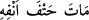
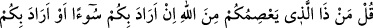
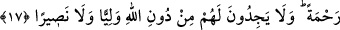

Ey Muhammed, onlara “De ki: “Eğer ölümden veya öldürülmekten kaçıyorsanız,
kaçmanın size asla faydası olmaz!” Çünkü herkes, yatağında/kendi kendine veya kılıç
darbesiyle ilâhî takdirde belirlenmiş ve ezel kaleminin yazdığı, asla değişmeyen bir
vakitte fenâ bulacak ve ölecektir.
Katil, ruhun bedenden çıkışını sağlayan fiildir. Râğıb der ki: “Katlin asıl anlamı,
ölümde olduğu gibi ruhu bedenden ayırmaktır. Ancak ölümün, bu işi üstlenen kimsenin
fiiliyle meydana geldiği dikkate alındığında buna “katil” denir. Hayatın elden gitmesi
dikkate alındığında “ölüm” denir.
“__WORD__, helâk olmak, ölmek demektir. Hz. Ali (k.v.) şöyle demiştir: “Araplardan
işittiğim her Arapça kelimeyi mutlaka Rasûlullah (s.a.)’den de işitmişimdir. O’nu (s.a.):
“__WORD__ (Yatağında/kendi hâlinde öldü)”[187] buyururken işittim, fakat bu sözü
ondan önce hiçbir Araptan işitmemiştim.” Bu söz, kişinin yatağında ölmesi demektir.
Çünkü bu kişi burnu üstü düşmüş ve ölmüştür. Araplar hastanın ruhunun burnundan
çıktığını, şâyet yaralanmışsa yarasından çıktığını hayal ederlerdi.
“(Eceliniz gelmemiş ise) o takdirde de, yaşatılacağınız süre çok değildir.” Yâni
eğer savaştan kaçmak fayda verecek olsa, siz de tehir edilmekten faydalandırılsanız bile
bu, az bir faydalanma veya az bir zaman olacaktır. Yâni kaçtığınız zaman sizi hayatta
bırakmazlar, sadece az bir zaman hayatta kalırsınız, sonunda yokluk şerbeti içilecek ve
ölüm hırkası giyilecektir.
Kim bu oluş ve bozuluş sarayına yani dünyâya ayak basarsa,
Yokluk yoluna yüzünü çevirmiş ve yönelmiş olur.
Ölüm kadehinden herkes içecektir,
Kabrin kapısından herkes girecektir.
Dünyânın tüm ömrü bile azdır. Dünyâ halkının ecellerinin müddeti nasıl az olmasın ki!
Bu durumu bilen şöyle demiştir: Âhiret hayatının yanında senin ömrünün miktarı sadece
tek bir nefes gibidir. Nakledilir ki Mervânîlerin birisi yıkılmak üzere olan bir duvarın
yanından süratle geçti de ona bu âyet okundu. Bunun üzerine o: “İşte ben de o azı
istiyorum” dedi.
17. De ki: “Allah size bir kötülük dilerse, O’na karşı sizi kim korur; ya da size
rahmet dilerse (size kim zarar verebilir)?” Onlar, kendilerine Allah’tan başka ne
bir dost bulurlar ne de bir yardımcı.
“De ki: “Allah size bir kötülük dilerse, O’na karşı” yâni onun kazâ ve takdîrinden